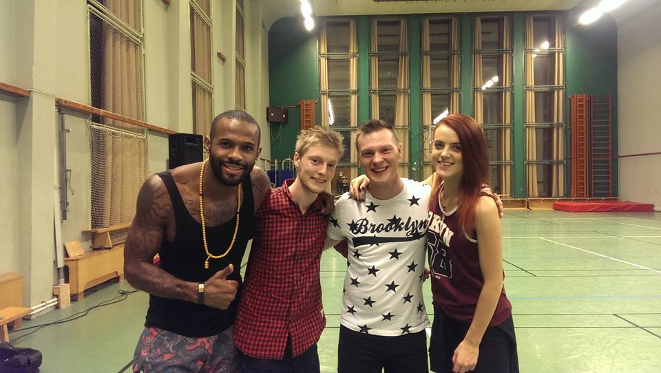

Tycker om att uppleva saker. Tar de chanser som finns här i livet och leva ut dem. En parantes överallt står det oftast bara Jonas (tex mah), men jag använder mitt andra namn som tilltalsnamn. Lång historia kort, Sebastian fungerar överallt i världen.
Just nu läser jag till Dataingenjörs på Malmö högskola, mobil IT. Det är tufft och man måste ligga i hela tiden!
Anledning för att jag läser Dataingenjörs programmet är för att jag tycker det är kul att programmera.
Har programmerat en hel del och tycker det är väldigt kul! T.ex. nu i höstas hade vi ett projekt i vår java programmerings kurs.
Där man skulle rita ut en 7x7 matris bestående av siffror, färger eller en rullande text (med flera 7x7 matriser).
Detta var ett roligt projekt. Vi lyckades göra både en windows app och en android app.
Man kan tänka sig att det inte skulle vara något svårt. Men det vara svårare än vad vi hade trott och tänkt!
För sista veckan innan vi skulle lämna in projektet så hade vi stora problem med att få ihop allt från alla grupp medlemmar.
Men jag lärde mig en hel del om att arbeta i grupp och hur tufft det kan vara.
Projektet finns tillgänligt på github för windows appen och för Android appen.
Min farmor och farfar har dansat hela deras liv och det är från dem jag har blivit insprierade av att dansa.
Så jag lärt mig att dansa Salsa, bachata och kizomba. Och tycker det är super kul.
Salsa är en latin amerikansk dans. som är snabb och fart fylld. När jag började dansa så visste jag inte så mycket om salsa.
Men senare visade sig att jag dansade en stil som hette New York style;
och att det finns flerar olika stilar. De 3 största är Kubansk, LA och New york stil.
En av de bästa LA instruktörerna bor och lär ut i malmö.
Är en dans från Dominikanska republiken. Det är väldigt sensuell och spännande att dansa. Och där med finns olika stilar.
En av de bästa instruktörerna är Korke och Judith. Från spanien, förra året starta de en dans studio i oslo.
Och hade en Bachata festival ( var så klart med på festivalen! =) )
Är en dans från Angola, Afrika. När man dansa Kizomba så dansar man väldigt nära.
Som man så mer eller mindre sparkar du på tjejen fötter.
Eller knuffar henne med din fot för att föra henne till rätt position.
Det är höga krav på mannen. Ifall man gör ett fel tramp så märks det direkt pga. att den är så närgången.
mer info..
En av de bästa dans-instruktörerna är Tony Pirata och Sophie Fox. De har en väldigt roligt och unik stil.

Resa är något jag tycker mycket om för att man får träffa ny människor och uppleva nya kulturer.
Har t.ex. backpackat i Australien som var riktigt häftigt och väldigt varmt.
Där fick jag chansen att mata delfiner och dyka i stora barriärrevet.


Är mycket bättre än dator spel. För att det är socialt.
Det är kul att utmanas och samarbeta. Det tar fram tävlingspersonen i mig.
I Tyskland finns det en stor spelmässa som arrangeras varje år i Essen.
Mässan heter Internationale Spieltage SPIEL men kallas också SPIEL in Essen som betyder spel i Essen.
Där man kan se och testa nya spel. Men också köpa dem.
Ifall man är en brädspel entusiast som jag är så gäller det att ta med en stor väska.
länk till brädspels mässan Spiel in Essen